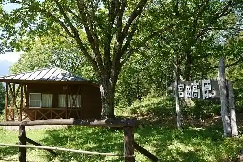

Miyada Highlands Campground
Miyada, Nagano · 0265-85-5864 · Official / source link
Naka Gosho Gorge
Miyada, Nagano · 0265-81-7700 · Official / source link
Miyada Highlands
Miyada, Nagano · 0265-85-5864 · Official / source link

Kurokawa Gorge
Miyada, Nagano · 0265-85-5864 · Official / source link
Ise Taki
Miyada, Nagano · 0265-85-5864 · Official / source link
Fudo Taki
Miyada, Nagano · 0265-85-5864 · Official / source link
Chuo Arupusu Komagagaku no Ga Ike
Miyada, Nagano · 0265-85-5864 · Official / source link
Miyada Yado Honjin Kyu Arai Ie House
Miyada, Nagano · 0265-85-2314 · Official / source link
Miyada Marettogorufu Ba
Miyada, Nagano · 0265-83-0680 · Official / source link
Komore Yo no Kei
Miyada, Nagano · 0265-85-5864 · Official / source link